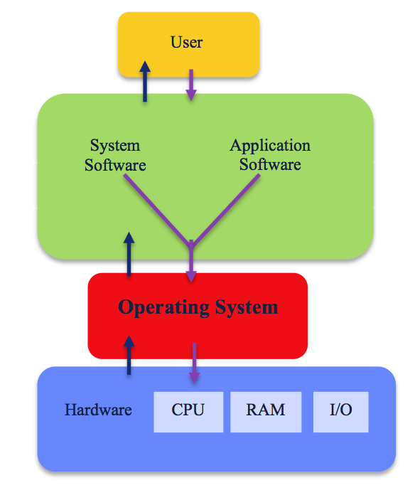

Deze afbeelding laat zien wat er in een computer met elkaar communiceert
Dit is hoe een DBMS werkt

Operating system
Een besturingssysteem, ook wel operating system of OS genoemd, is software die werkt als een soort laag tussen de hardware en de toepassingsprogramma’s die de gebruiker gebruikt. Het besturingssysteem heeft veel verschillende taken en is erg belangrijk, een aantal dingen die het besturingssysteem uitvoert is bijvoorbeeld zorgen dat de computer opstart en het verdelen van de toegang tot de hardware. Het besturingssysteem zorgt er dus voor dat niet 20 verschillende applicaties de volledige CPU of RAM proberen te gebruiken. Enkele voorbeelden van bekende besturingssystemen zijn bijvoorbeeld Windows, macOS en Linux.
Talen/Compilers
Als je iets gaat programmeren moet je dan in een programmeertaal doen, er zijn er echter meer dan een. JavaScript wordt veel gebruikt, vooral op websites. Met behulp van JavaScript kan je interactieve functies maken op je site. Een andere veel gebruikte programmeertaal is python. Python staat bekend als een programmeertaal die makkelijk te leren is en het gebruik van python is zeer divers. Deze taal wordt onder andere gebruikt in webontwikkeling, automatisering en dataverwerking. C# (uitgesproken als C Sharp) wordt veel gebruikt voor het ontwikkelen van desktop applicaties en in de machine learning. Ook wordt C# gebruikt in Unity, een populaire game-engine. C# wordt dus ook gebruikt in het ontwikkelen van games.
Een compiler is een programma dat wordt gebruikt om code geschreven in een programmeertaal om te zetten in een uitvoerbaar programma. Een compiler vertaalt de code naar een formaat die een computer begrijpt, zodat de computer het programma kan uitvoeren.
DBMS
DBMS staat voor Database Management System, het is dus een systeem dat een database beheert. Een database is een georganiseerde verzameling van allerlei gegevens. Een paar belangrijke functies van een DBMS zijn het gegevensbeheer, het DBMS zorgt ervoor dat gegevens efficiënt worden opgeslagen en georganiseerd. Het DBMS zorgt ook voor de backups en de beveiliging van de data die opgeslagen is. Een DBMS is dus essentieel voor het werken met databases, zonder zouden de databases niet duidelijk georganiseerd zijn en zou de database ook niet beschermd zijn.